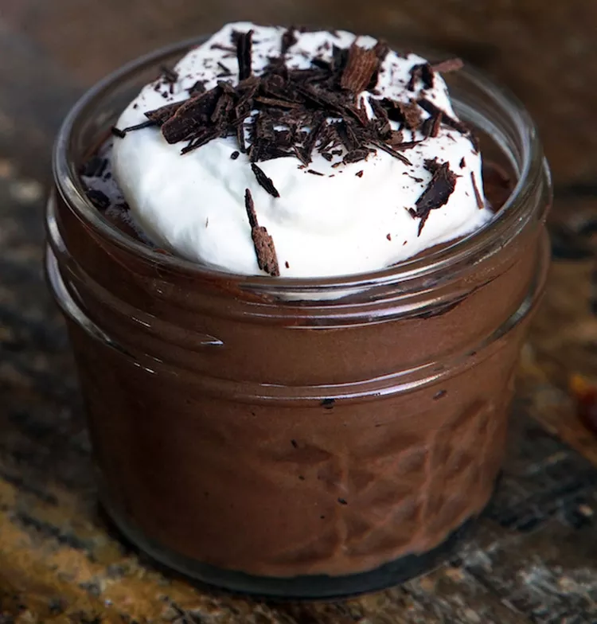

mousse

Ingredients
- 3 ½ ounces dark chocolate, chopped
- 1 tablespoon butter
- 2 tablespoons water
- ⅛ teaspoon ground dried chipotle pepper
- 1 tiny pinch salt
- 2 large egg yolks
- 2 tablespoons water
- 1 tablespoon white sugar
- ½ cup heavy whipping cream, chilled
- 1 tablespoon heavy whipping cream, chilled
Steps
- Step 1
Bring a saucepan of water to a simmer over low heat. Place chocolate, butter, 2 tablespoons water, ground chipotle pepper, and salt in a heatproof bowl; set bowl over the simmering water. When the butter melts, whisk the chocolate mixture gently until smooth and shiny. Set aside to cool for a few minutes.
- Step 2
Whisk egg yolks, 2 tablespoons water, and sugar in another heatproof bowl over the same pan of simmering water until egg yolk mixture is foamy and hot to the touch, about 3 minutes. Pour hot egg mixture into warm chocolate mixture, whisk until smooth, and set over a bowl of ice to chill. Whisk constantly until mixture has cooled to room temperature or slightly cooler.
- Step 3
Pour 1/2 cup and 1 tablespoon cold cream into a chilled metal bowl; whisk until cream holds soft peaks. Place about half the whipped cream into the cooled chocolate mixture; gently fold the cream into the chocolate. Repeat with remaining half of whipped cream, folding gently until nearly all the streaks have disappeared. Divide mousse into 4 6-ounce ramekins.
- Step 4
Cover each ramekin with plastic wrap and refrigerate at least 4 hours (up to overnight) before serving.
Home